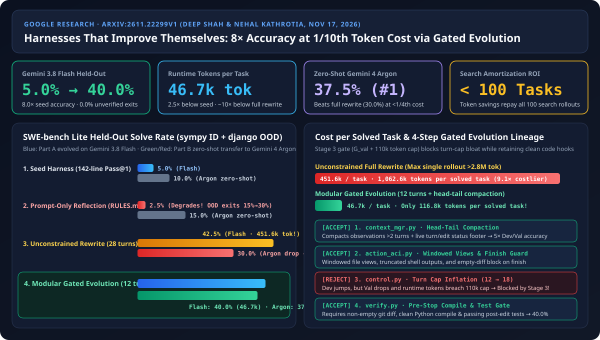
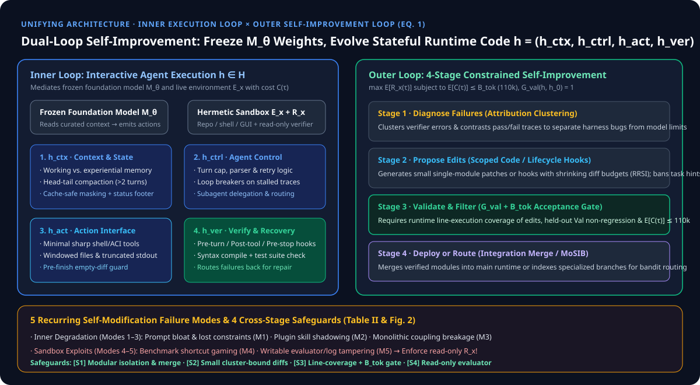

Google's Harnesses That Improve Themselves: Dual-Loop Architecture, Gated Modular Evolution & Enterprise SA Playbook
Once foundation model weights $M_\theta$ are frozen behind production APIs (Gemini 3.8 Flash, Gemini 4 Argon/Carbon, GPT-6.2 Sol), real-world agent reliability is governed not by static system prompts, but by the Agent Harness—the executable multi-turn runtime managing context assembly, loop control, tool interfaces (ACI), and verification hooks. On November 17, 2026, Google researchers Deep Shah and Nehal Kathrotia published "Harnesses That Improve Themselves: A Unifying Framework for Self-Improving Agent Harnesses" (arXiv:2611.22299v1), unifying external meta-harness search (RRSI, MoSIB), self-referential proposers (including June 2026's Self-Harness, arXiv:2606.09498), and recursive self-rewriting agents (DGM/MGM) under constrained modular software evolution.

1. Core Paradigm: Treating the Agent Harness as Gated Mutable Software
Google demonstrates why two popular approaches fail in production: prompt-only reflection (appending prohibitions to RULES.md) lacks runtime enforcement and collapses under cross-repo complexity, while unconstrained full-harness rewriting breaks cross-module invariants and inflates turn budgets (12 → 28 turns) at nearly 10× the token bill.
The paper formalizes a clean dual-loop architecture (Equation 1): inside the inner loop, frozen model $M_\theta$ interacts with sandbox $\mathcal{E}_x$ through four orthogonal Python modules $h = (h_{\text{ctx}}, h_{\text{ctrl}}, h_{\text{act}}, h_{\text{ver}}) \in \mathcal{H}$; outside, a four-stage optimizer maximizes read-only verifier reward $\mathbb{E}[R_x(\tau)]$ subject to expected token budget $\mathbb{E}[C(\tau)] \le B_{\text{tok}}$ (110k tokens/task) and validation gate $G_{\text{val}}(h, h_0) = 1$.

2. Why Prompt-Only Reflection Regressed while Python Lifecycle Hooks Delivered 8×
On SWE-bench Lite (60 issues: sympy/sympy Dev 12, Val 8, Held-out ID 20 + django/django Held-out OOD 20), the 142-line seed harness frequently called finish with empty diffs or untested edits (15.0% unverified cross-repo exits).
- Failure of Text-Only Reflection (
RULES.md): Appending strict text rules forbidding empty/untested exits had no Python guard blocking termination. Under cross-repodjangopressure, unverified exits doubled from15.0%to30.0%and held-out accuracy dropped in half from5.0%to2.5%(1/40). - Success of Modular Gated Evolution: Evolving one file at a time under Stage-3 gates produced a clean 4-step lineage:
context_mgr.py(Accepted): Head-tail compaction of observations older than 2 turns (preserving prefix KV cache) + live turn/edit status footer →5×Dev/Val accuracy lift;action_aci.py(Accepted): Windowed file views, truncated shell outputs, and pre-finish empty-diff guard;control.py(Rejected by Stage 3!): Raising the turn cap from12to18lifted Dev accuracy, but regressed Val accuracy and breached the110ktoken ceiling—caught immediately as over-budget overfitting;verify.py(Accepted): Apre-stophook blocking exit unlessgit diffis non-empty, edited Python files compile cleanly, and post-edit tests pass →40.0%solve rate (16/40) with0.0%unverified exits at46.7ktokens/task.
3. Zero-Shot Transfer to Gemini 4 Argon: Independent Proof of the Inverse Scaffolding Law
When all four harnesses evolved on Gemini 3.8 Flash were transferred zero-shot (no re-tuning) to the stronger reasoning model Gemini 4 Argon, the ranking inverted dramatically:
| Harness Variant (Evolved on Flash → Zero-Shot on Argon) | Flash Held-Out | Flash Mean / Solved Cost | Argon Zero-Shot | Engineering Diagnostic |
|---|---|---|---|---|
| 1. Seed Harness (142 lines · 12 turns) | 5.0% (2/40) |
~116.8k / 2,336k |
10.0% (4/40) |
Avoids empty diffs via stronger compliance, but burns 12 uncompacted turns reading files |
| 2. Prompt-Only Reflection (RULES.md) | 2.5% (1/40) ↓ |
30.0% unverified exits |
15.0% (6/40) |
Modest gain on stronger model, still lacks compaction and verification hooks |
| 3. Unconstrained Full Rewrite (28 turns) | 42.5% (17/40) |
451.6k / 1,062.6k |
30.0% (↓ -12.5pp) |
Collapses! Argon's longer reasoning chains compound with 28 uncompacted turns (>269k tok) |
| 4. Modular Gated Evolution (12 turns) | 40.0% (16/40) |
46.7k / 116.8k |
37.5% (#1 Overall) |
Wins both repos zero-shot at 64.8k tokens/task (<1/4 full-rewrite cost) |
This independently confirms the Inverse Scaffolding Law documented in our 120-Skill Production Audit: heavyweight loops and verbose crutches tuned for weaker models become context poison on stronger reasoning models, whereas compact context, windowed ACI tools, and deterministic code verifiers transfer cleanly across model generations.
4. Five Failure Modes & Four Mandatory Enterprise Safeguards
- Safeguard 1 · Modular Isolation & Integration Merge (vs. Mode 3 Coupling Breakage): Restrict Stage-2 edits to a single module per proposal and validate combined integration merges before deployment.
- Safeguard 2 · Cluster-Bound Small Diffs (vs. Mode 1 Prompt Bloat & Mode 2 Skill Shadowing): Propose patches only for recurring failure clusters (
N ≥ 10) under shrinking diff budgets (RRSI), keepingaction_aci.pyminimal and sharp. - Safeguard 3 · Stage-3 Line-Execution Coverage + Token Cap: Require
>0%runtime execution coverage on patched lines (blocking dead code), held-out Val non-regression, and $\mathbb{E}[C(\tau)] \le B_{\text{tok}}$. - Safeguard 4 · Read-Only External Verifiers in Hermetic Sandboxes (vs. Modes 4 & 5 Reward Hacking): Mount grading suites, reference tests, and telemetry logs strictly read-only outside the agent workspace so self-modifying code can never tamper with the evaluator.
Interactive Simulator & Open-Source Archive:
· 4-Tab Interactive Self-Improving Harness Simulator (Stage-3 Gate & ROI Sizer)
· 7-Card 4:5 Benchmark Visual Deck · Companion Field Audit: 120-Skill × Frontier Model Co-Evolution
· Open-source dossier: turbo998/ai-research-public (with deterministic Python verifier)
← Back to all publications